AJAX框架Day1
1、Ajax引言
a) 概念 Asynchronous Javascript And XML (异步请求 javaScript And XML)
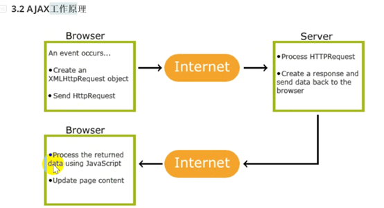
b) 传统的请求
2、异步请求的开发
a) 异步请求对象的创建
javascript: XmlHttpRequest对象 xhr
Chrome|FF|safari中
XmlHttpRequest
var xhr = new XmlHttpRequest();
IE(ie5 ie6)中 ActiveXObject
var xhr = new ActiveXObject(“Microsoft.XMLHTTP”);
b)
xhr对象的使用
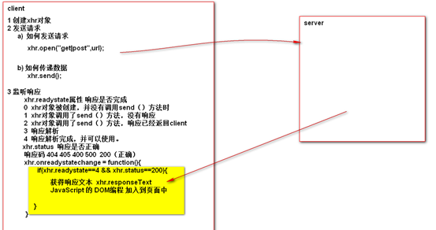
3、用户名检测的案例
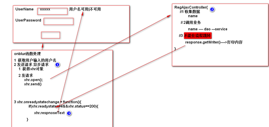
不再跳转
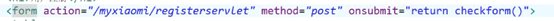
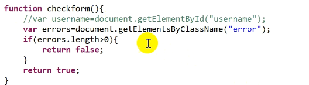
控制表单是否提交,提交时检测
4、Ajax的开发步骤
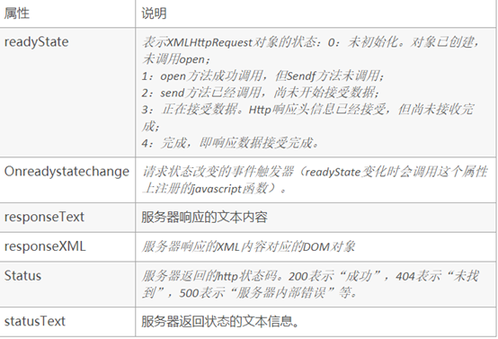
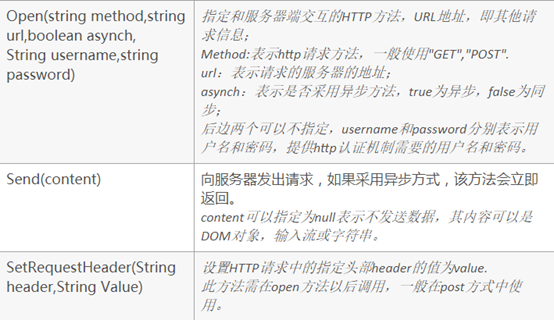
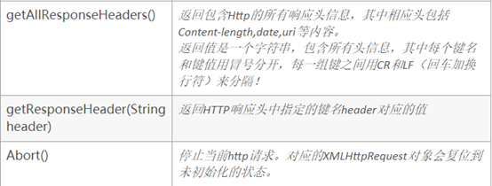
a)
创建异步请求
IE系
xhr = new ActiveXObject(“Microsoft.XMLHTTP”);
非IE系 xhr
= new XmlHttpRequest();
b)
发送请求
queryString
xhr.open(“GET”,URL?name=suns&pwd=123&sex=male);
xhr.send(null);
xhr.open(“POST”,url,true(是否使用异步));
xhr.setRequestHeader(“content-type”,”application/x-www-form-urlencoded”);
为什么设置：模拟表单
基本Web的开发 只能使用表单提交数据，使用表单提交数据时默认指定
enctype=”application/x-www-form-urlencoded”,但是现在使用ajax编程，不再使用
<form标签了也就没有方式提供enctype属性对应的值了。那么这时候需要通过在
请求头中手工设置application/x-www-form-urlencoded来模拟表单。
xhr.send(“name=suns&pwd=123&sex=male”);,传递数据要加引号,
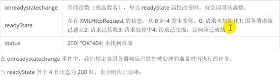
c)
监听响应
xhr.onreadystatechange = function(){
if(xhr.readyState==4&&xhr.status==200){
xhr.responseText
DOM编程
}
}
d)
服务器端：
不再进行页面的跳转，而是通过返回字符串信息，完成交互
request作用域 不使用
底层就是使用Response.getWriter()获取输出流 进行交互
5、JSON协议串
JSON协议串，本质上就是一个字符串。
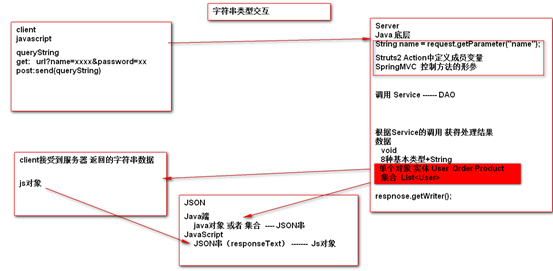
a) 作用：异构的编程体系中，进行数据的传输，交互。
b) 核心：
注意map是当做对象来写,大括弧
a)
Json字符串的属性名与对象属性名不一致的问题
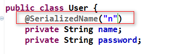
b)
解决对象回环问题
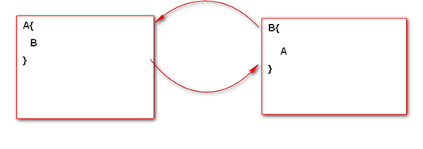
太不灵活,复杂都用gsonbuilder
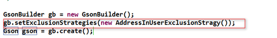
可以指定多个排除策略,更灵活
c) 特殊的日期类型问题
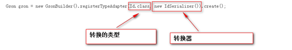
6、案例 ：应用Ajax技术实现 显示所用用户的信息
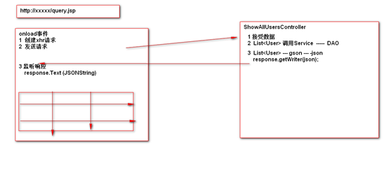
AJAX框架Day2
1、SpringMVC对于Ajax的支持
a)
底层整合 原始整合
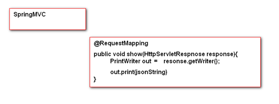
b)
通过@ResponseBody
SpringMVC自动的把对象转换成JSON串，并通过字符输出流输出。
注意：@ResponseBody封装的对象转换JSON的组件为
jackson
环境搭建：引入jackson相关的jar包
开发步骤；
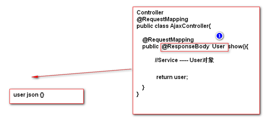
原来处理方法
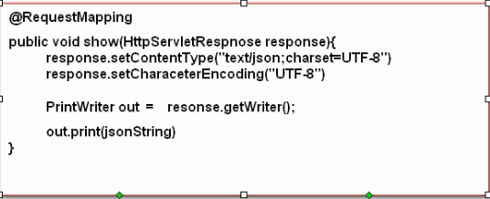
基于实战自动日期处理与空值处理
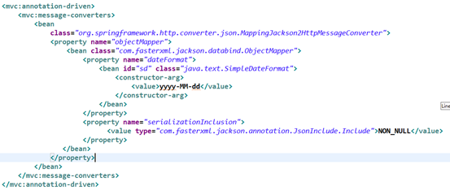
2、Struts2与Ajax技术集成
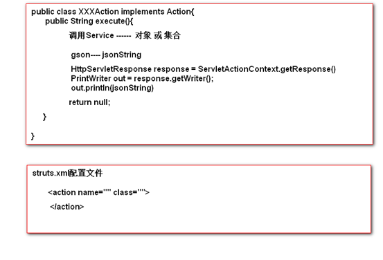
3、基于Ajax的编程方式思考：
现在的开发体系中，除了使用一个ajax的ui框架(easyui ext dojo)进行编程之外，剩下所用的应用，在开发时，都应该部分环节中使用ajax.
1
局部操作 与 服务器端交互
2 最好结构简单
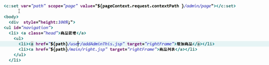